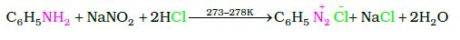

Benzenediazonium chloride is prepared by the reaction of aniline with nitrous acid at 273-278K. Nitrous acid is produced in the reaction mixture by the reaction of sodium nitrite with hydrochloric acid. The conversion of primary aromatic amines into diazonium salts is known as diazotisation. Due to its instability, the diazonium salt is not generally stored and is used immediately after its preparation.
